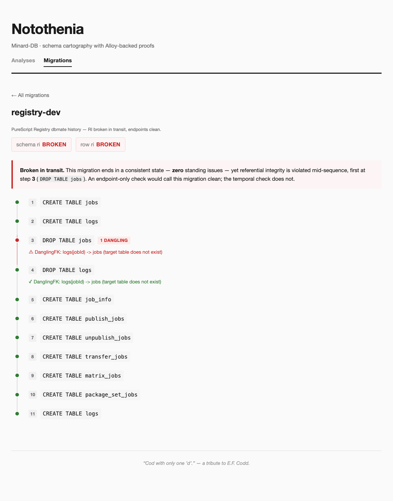
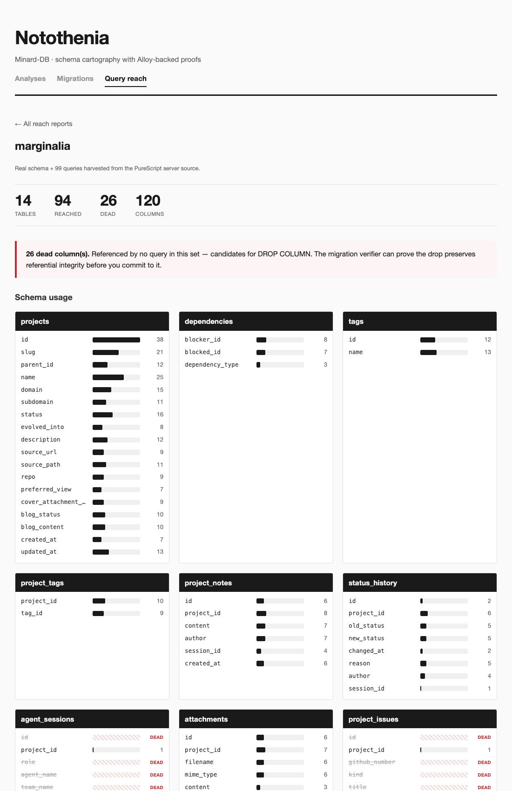

State the invariant. Let the machine find the counterexample.
Notothenia is a member of the QuickCheck family. Where SmallCheck exhaustively enumerates small values, Notothenia compiles your schema to a model for Alloy — Daniel Jackson's relational model finder — and asks its SAT solver to either prove a property holds within scope or hand back a concrete counterexample: the specific rows that break it.
It borrows the ergonomics the QuickCheck family spent years building around that core loop: a validity partition (every counterexample is a meaningful schema, never a degenerate one), scope minimization in place of shrinking (report the smallest scope at which a property breaks), and fault localization (name the offending functional dependency, not just "the rows").
Migration verification
Migrations are type-system evolution. Notothenia compiles an ordered migration sequence into an Alloy 6 temporal model and proves referential integrity holds across the entire trace — not just at the endpoints.
The difference matters. Run it on the PureScript Registry's real migration history and it flags a transient dangling foreign key: a step that drops a table while another still references it. The migration ends perfectly consistent, so an endpoint diff calls it clean — but referential integrity was violated in transit. The timeline shows exactly where.

Query reach & dead columns
Point Notothenia at a schema and the queries that run against it, and it resolves what each query touches — through joins, aliases, wildcards, and SQL's name-resolution rules — down to the column.
Aggregate that across a codebase and the dead
columns fall out: columns no query references. Run on
Marginalia's own schema and server, 26 columns surface as dead —
dominated by two tables the server only ever cascade-deletes. A
dead column is a DROP COLUMN candidate; the
migration verifier can then prove the drop is safe before you
commit to it.

How it works
- Ingest. Parse DDL or introspect a live catalog into a Schema AST — one typed PureScript value that is the single source of truth.
- Generate. Emit an Alloy
.alsmodel: tables become signatures, foreign keys become relations, constraints become facts. The structural-validity facts are kept separate from the one property under test. - Verify. Run Alloy's SAT solver. Either "no counterexample within scope ≤ N" or a concrete witness — minimized to the smallest scope that still breaks.
- Show. Render the result with Hylograph: topology graphs, migration timelines, usage heatmaps — operate directly on the structure, not a report about it.
Alloy checks within a bounded scope, and Notothenia is honest about it: results read "verified for all instances with ≤ N rows per table" — the small-scope hypothesis, the same empirical bet SmallCheck makes.
The proof catalog
BCNF / 3NF
Every non-trivial FD has a superkey determinant — or here's the one that doesn't.
FK acyclicity
No cycle in the foreign-key graph — or the exact path A → B → A.
RI across migrations
Referential integrity holds at every step of a migration trace.
Dead columns
Columns no query in the codebase references.
Lossless join
A decomposition rejoins to the original — no spurious tuples.
Type widening
A column's new type subsumes the old domain.